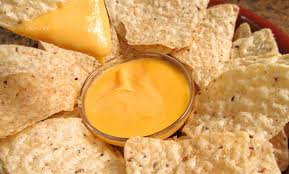

Salsa de queso cheddar
| Ingredientes |
- 200 grs de queso cheddar
- 150 ml de leche
- 1 cucharada y media de maicena
- 1 cucharada de Mantequilla
- 2 cucharaditas de queso de untar o un quesito
- Sal
- Pimentón dulce y picante
|
Preparación
Derretimos en un cazo la mantequilla a fuego bajo.
Mezclamos la harina con la leche evitando que queden grumos. Vertemos esta mezcla en el cazo con la mantequilla.
Añadimos el queso crema y volvemos a mezclar.
Ahora trozeamos el queso cheddar (para que se funda más rápido) y lo echamos en el cazo y removemos para que todo se integre bien.
Una vez tengamos una salsa uniforme, añadiremos un poco de sal (al gusto) el pimentón dulce, y podemos añadir un poco de pimentón picante para que tenga un sabor más intenso.
